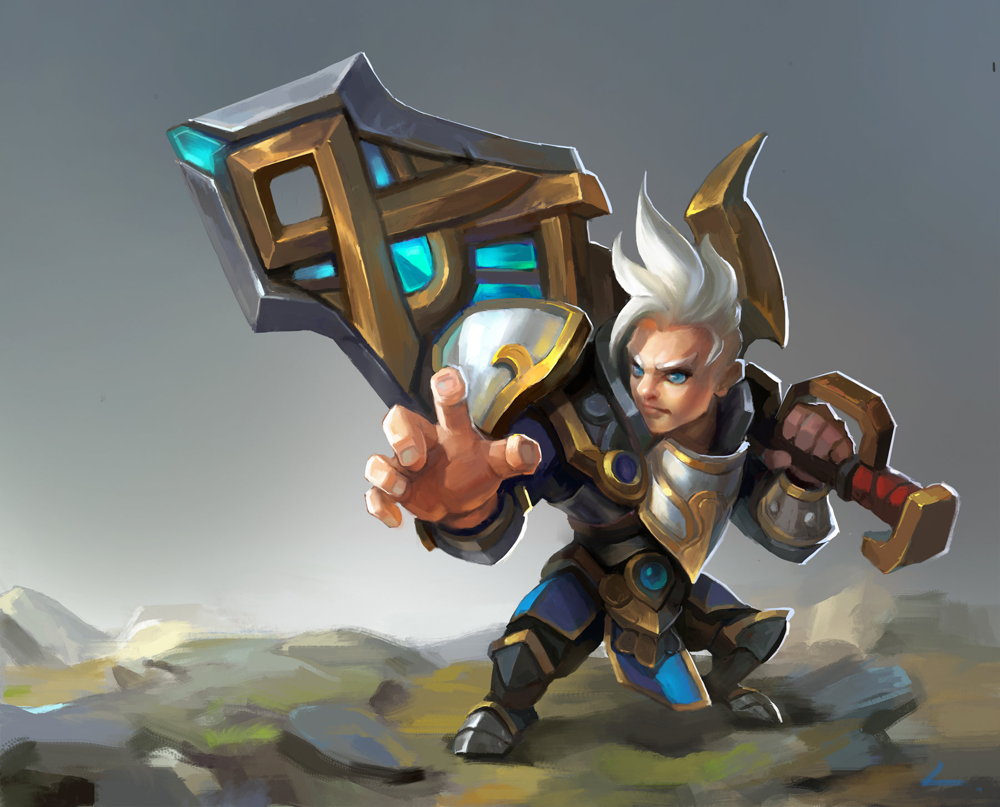

Zhouxinwen
Little heart, big dreams.
My insights
Code life
Growth notes
About me
connect me
focus me
简单
发布于：2018/11/10 23:51 | 修改次数：0|标签：成长笔记
小说里独孤求败认为剑的三重境界：第一重便是使剑灵活锋利到极致，第二重便是使剑沉重到极致。所谓的“重剑无锋， 大巧不工”。一如大智若愚，大巧若拙。任何东西到进化最后都会回归最初的样子。技巧的极致便会回归简单，无需利刃， 一挥一收间皆有泰山之势，一抬一放，距离不多不少。重剑里是自信是慈悲是与剑的合二为一。人们都是剑，我是让自己锋利， 还是让自己沉重。
